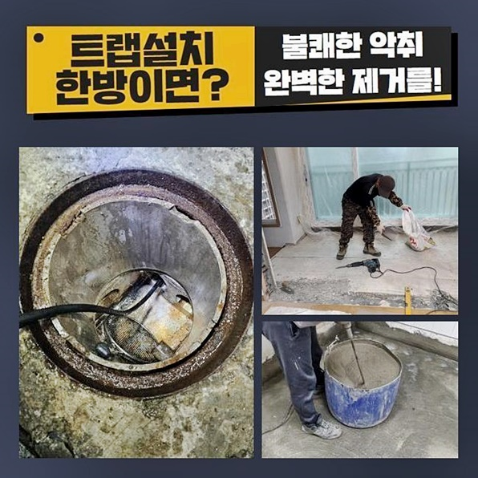
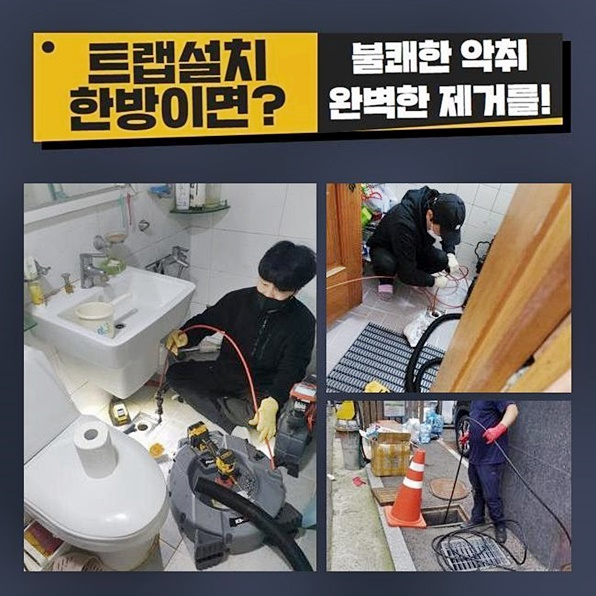
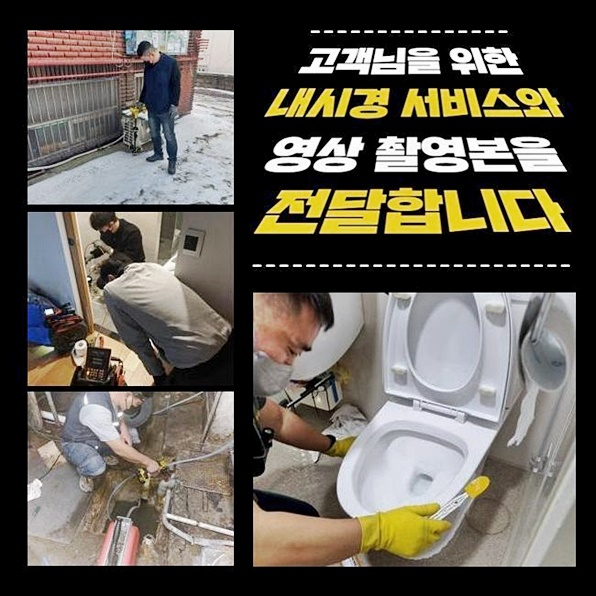
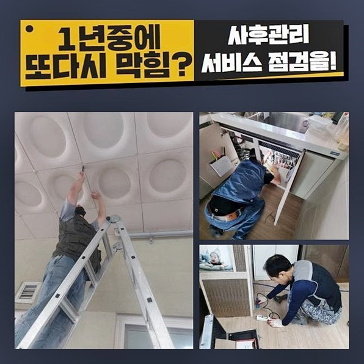
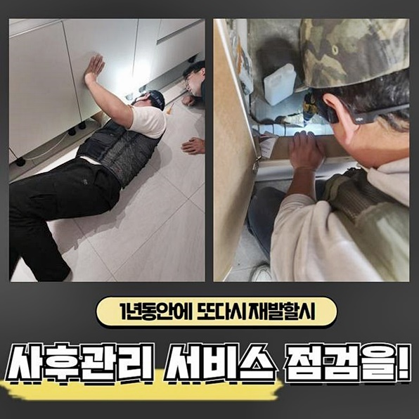
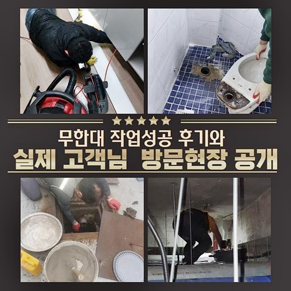
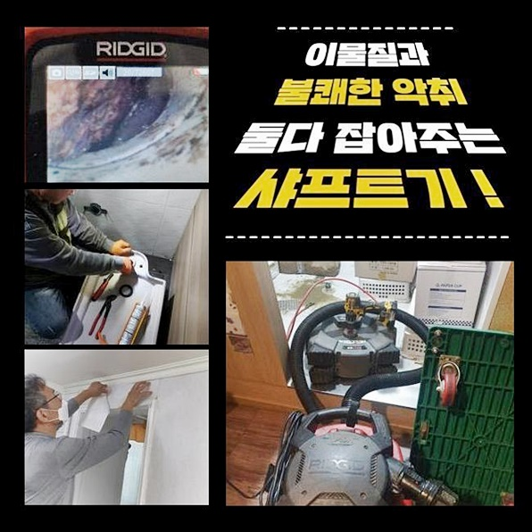

🏠 광진구 구의동오수관뚫음 화양동 악취차단 물샘전문업체
용인시 처인구 배관막힘 전문 시공 후기

📋 작업 개요
- 위치: 용인시 처인구, 수원시 영통구, 화성시 동탄
- 서비스 유형: 배관막힘, 고압세척, 내시경점검
- 작업 일시:
- 업체명: 하수구수사대 (010-5615-2118)
🔍 문제 상황
광진구 구의동오수관뚫음 화양동 악취차단 물샘전문업체
과거에 갑자기 하수관에 막힘들이 있었거나 이곳 하수관 결함적인 증상으로 인하여 전문가를 모색해봐야하는 상황에 처해있을땐 고객분들이면 방치마시고 차분히 하수관막힘 항목들을 열거해드릴게요
의뢰를 하신다음 전문가들이 방문드려 선제적으로 집안측의 하수구 등에 트러블들이 발생해 세척해야되는 구간을 내시경카메라로 체크한 뒤 어떠한 절차를 통해 작업을 이어가는지 배관전문인들에게 들으셔야 합니다
배수로에 원인들을 체크하고 작업을 할것인지 뚫기보다는 방치할것인지 의뢰인분이 선택하시면 된답니다
문제들이 양산되었을때 첫번째로는 고객분이 혼자 해결할 목적으로 시도하시는게 흔히 볼 수 있는 케이스입니다
수행되야할 조치들을 제대로 실시되지않을 시엔 반복하여 비슷한 막히는 사태가 야기되는걸 사실들을 잘 모르십니다
갑작스럽게 하수관에서 오수가 막혀버리는게 보일 시에 빠르게 전문업체와 해결책을 모색해보세요
한 고객님의 하수관장애 불편을 듣고 찾아뵈었는데요
욕실공간과 주방도 온전히 쓰지못했다고 전달해주셨어요
내식성이 떨어진탓에 막혀버렸을 시에 하수관을 점검한 뒤 수리합니다
대부분 하수관 결함적인은 안측에 비정상적인 이물이 배출되면서 쌓일 시에 출수구까지 흘러가지 않고 침전되며 문제가 나타나게 되죠

🔎 원인 분석
💡 전문가 진단: 정밀 진단 장비를 사용하여 슬러지의 고착 여부를 판명하고 타격/세척 작업을 실시했습니다.
증세들이 걷잡을 수 없게되어 조속한 해결들이 필요할 때 전문가들의 해결능력도 중요하겠으나 그에 못지않게 볼것이 전문적인 도구들을 지참했느냐 인데요
거시적으로 살펴보았는데 내측의 배관라인이 타 가지배관으로 보이는 배수관과 연결된것을 확인했습니다
우선 배수구가 막히는이 심각하다고 말씀하신 세면대시설의 배관을 체크하고자 깊숙하게 내시경장치를 삽입하고 어디서부터 증세가 발생되었나 원인파악들을 수행해요
내시경장치로 진단하니 부분마다 배수진행을 막는 요소들이 자리하고 있어 역류되는 문제가 연출된걸 쉽게 확인했습니다
중간중간 퇴적되어있던 잔여물들을 배출시키기위해서 외측으로 빼내서 통수길을 내주기위해 흡입력이 강한 석션으로 빨아당겼습니다
강력한 석션을 운용하므로 이로써 깊이 부유하는 이물을 제거시켜줘요
입구부터 밀착시켜 압박한 다음 여기저기 떠있는 잔여물을 어려웠으나 외부로 빼내줬죠
화장실은 특히나 다양한 이물이라던가 유분기가 있는 용품들 의도치않게 빠지는 것들까지 내부에 축적된다면서 고착되어 막힘문제를 야기시킵니다
배관트러블을 예방하기위해 화장실내부에서 이용하시고 난 다음 정리 시 배수구쪽을 점검해보고 정리해주시면 좋고 끝으로 배관으로 배출되지 못하도록 조심하게 마무리하면 된답니다
주기성을 갖고 하수관 관리책 실시도 해주심이 좋아요
육가를 걷어내고 트랩부에는 다양한 이물이 쌓여있습니다

🔧 작업 과정
크기가 있는 물건들 및 오염원 유분기탓에 하수도 내측이 오염되어있던 모습이였습니다
이곳을 세척하려면 이전에 이용된 석션장치를 가용하여 세척을 하지않는데요
여타 장비를 써서 세척할 요량이였어요
우선 배수구 안에 남겨진 잔여물질들과 머리카락뭉치를 제거해주기위하여 샤프트장비를 이용합니다
플렉스 샤프트로 말씀드리면 드릴을 통하여 빠르게 돌아가면서 안정적으로 벽면 오염물을 제거시키는 장점들을 탑재했으며 벽에 흡착된 잔여물질이 존재할 때 샤프트를 가용함으로서 깔끔히 해드리고 있답니다
이 작업을 통하여 사슬부에 걸리는 고착물이 발생될 때 제거시키며 석션장비도 병행하여 반복하여 청소해준답니다
싱크대와 화장실공간의 라인과 맞닿은 부분들도 깨끗히 잔여물을 수습하는 절차도 물론 빠트리지않았죠
그러나 다시한번 청소해줘야하는 지점이 있었어요
개수대의 증상도 사라지게끔서 주방에서 접촉하고 있는 배수관의 수리가 실시되어야 했는데요
이런 부분까지 의뢰인에게 내시경으로 정확히 확인해보시게끔 공유를하여 보여드렸습니다
의뢰인분은 서둘러 작업할것을 원하셨기에 하단부의 배수관을 배수라인에서 분리시켰습니다
배수통 하단에 하수관에 슬러지까지 자리하게되며 통수가 불가했기에 해체과정을 거친것이죠
해당 부위에서부터 검수를 진행할 목적으로 배수관의 모습들을 관찰해보니 머리카락등이나 석회질들이 고착되어 떨어지지 않는 모습을 목격하였어요
침전된 곳을 재빨리 청소시키며 청결하게 변신하도록 만들어주었습니다
진행 중에 하얀이물들이 굳는바람에 남아있던 부분이 확인되어 고객분에게 저희들에게 전화하기 이전 사용한 조치가 있는지 여쭤봤더니 주변에서 클리너용액을 사셔서 배수구로 부었다고 말씀하셨어요
안좋은 문제로 시도해보다가 잘못하다가 심각해지는 문제로 바뀔 수 있기에 전문업체의 시각이 요구됩니다
아래의 하수라인으로 장비를 삽입하고 세척하기위하여 조그마하게 타공작업을 하고 하단에 메인배관으로 전문도구를 투입하여 청소를 시작해요
모든 과정에서는 내시경장치로 해당 상황들을 보면서 작업하므로 염려할 필요가 없으세요


✅ 작업 완료
청소를 해줄 때 탈락된 것은 또한번 석션장치로 흡입시켜주면 이렇게나 깨끗히 배수로를 확인할 수 있습니다
물빠짐이 저하되어도 문제에대해 걱정들은 접어두세요!
어찌해야 모르는 문제까지 해결해들고 있기 때문에요!
이전에 방문한 전문진이 마무리를 안하고 도중하차했던 적이 있다면 조속히 저희전문가에게 도움을 청해보세요!
고객맞춤 배수관 복구를 진행하고.지원해드리고 문제들이 생기셨다면 언제라도 부담없이 문의해주신다면 최선을 다해 설명드릴게요




⚠️ 하수구 배관 막힘 예방 및 관리 가이드
- ✅ 머리카락, 비닐, 물티슈 등 물에 분해되지 않는 이물질은 절대 흘려보내지 마세요.
- ✅ 기름기 많은 식기는 설거지 전 키친타올로 먼저 기름때를 닦아내세요.
- ✅ 주기적으로 배수구에 뜨거운 물을 가득 부어주어 유지방 고착을 방지하세요.
- ✅ 작업 후 1년 이내 재발 시 무상 A/S 보증 서비스를 제공합니다.
💡 핵심 정리
- 확실한 장비 작업(내시경 점검 및 샤프트 스케일링)으로 원인을 뿌리 뽑습니다.
- 작업 후 1년 이내에 동일한 부위 재발 시 100% 무상 A/S 서비스를 보장합니다.
- 서울 · 경기 · 인천 전 지역에 24시간 언제든 긴급 출동할 수 있도록 항시 대기 중입니다.
❓ 자주 묻는 질문 (FAQ)
🚨 용인시 처인구 배관막힘 문제로 고민이신가요?
정확한 원인 진단과 확실한 시공으로 재발 없는 해결을 약속드립니다.
24시간 긴급 출동 | 서울 · 경기 · 인천 전지역 | 1년 내 재발 시 무상 A/S